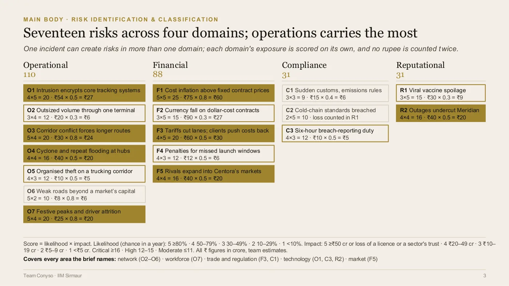
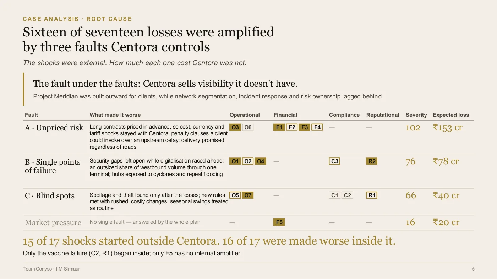
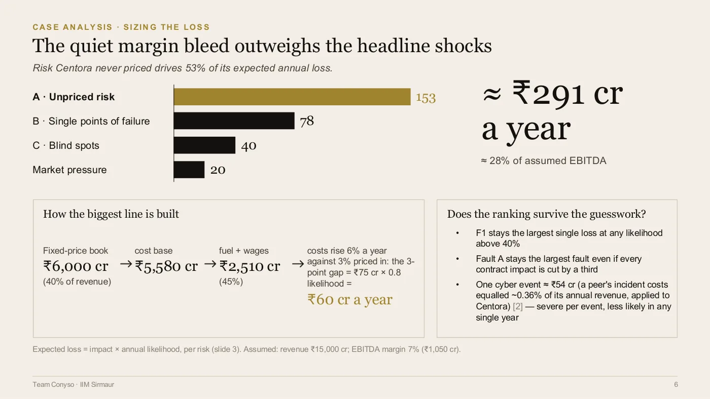
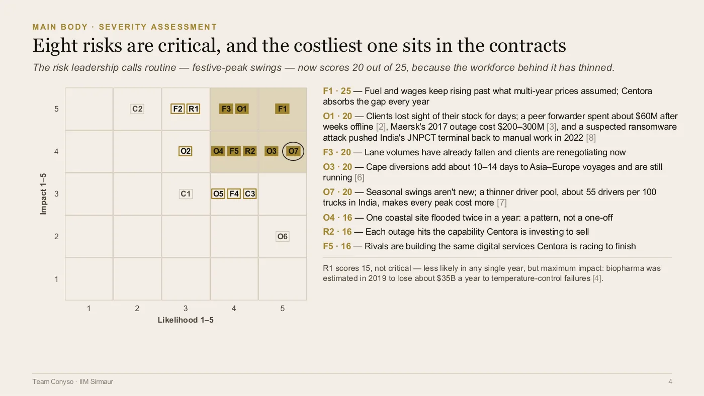
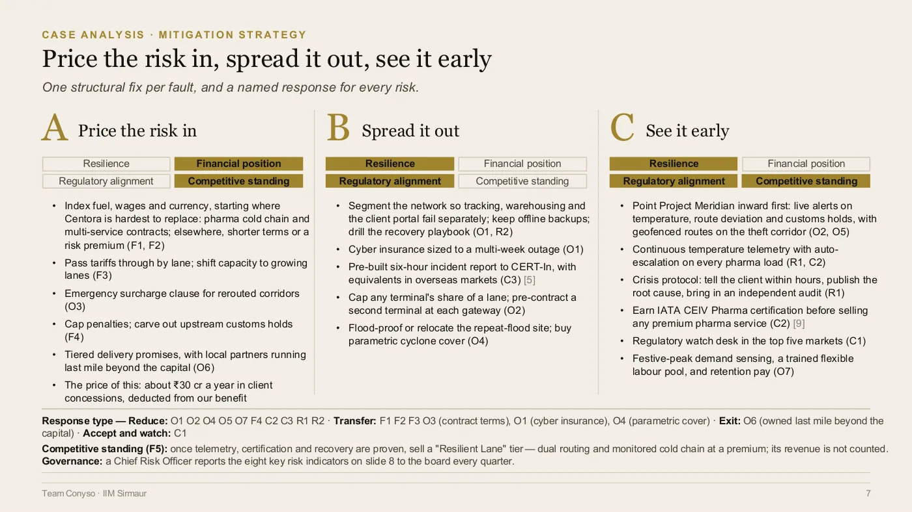
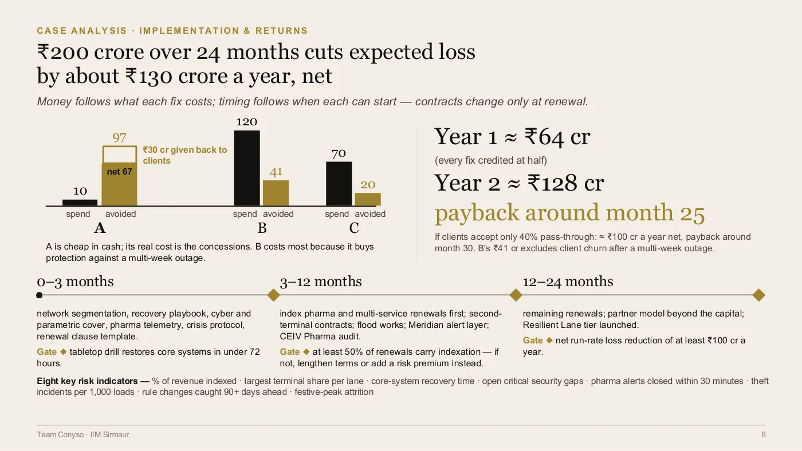
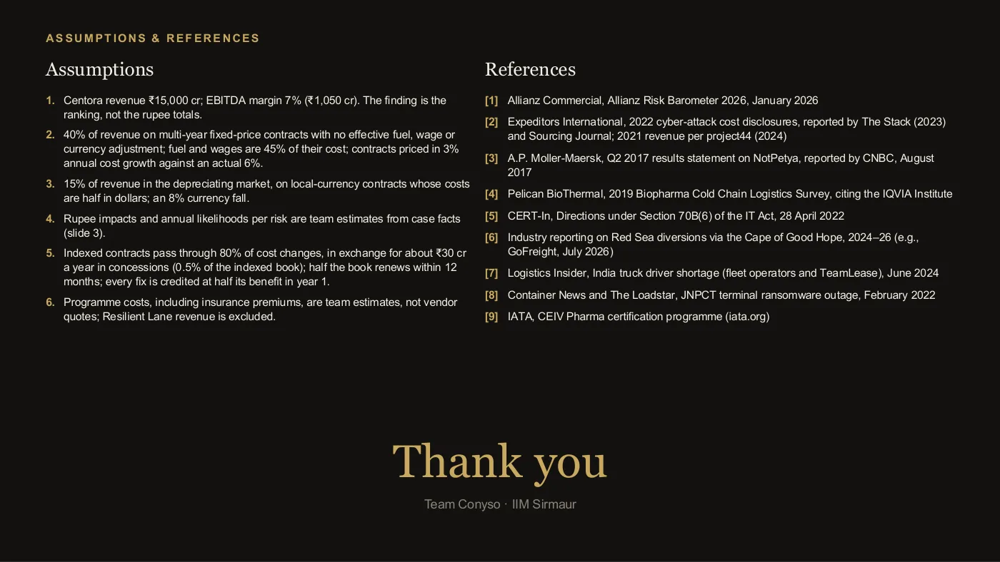

Certamus · Case competition
Sankriya 11.0
Club Kaizen, IBS Hyderabad · 19 September 2026 · Pending, Final round (result not yet announced)
The brief below is restated in our own words. The original belongs to the organiser.
Seventeen things had gone wrong
The brief handed us a company in trouble. A logistics group grown out of a Mumbai freight-forwarding operation into freight, warehousing, cold chain and last-mile delivery on every continent but one. And then two years of it being hit.
A systems intrusion that locked the tracking and warehouse platforms. New tariffs. A currency fall. A cyclone. A sea corridor that had to be rerouted. A terminal strike. A vaccine shipment that spoiled in transit and ended up on social media.
We counted seventeen distinct risks. The obvious deck writes itself: seventeen risks, seventeen fixes, one slide each.
We opened by saying none of it was their fault.
The brief belongs to the organiser, so it is restated here in our own words rather than reproduced.

All seventeen, scored and grouped, on one slide. Likelihood times impact, the scale printed on the slide rather than assumed, and every rupee figure marked a team estimate. One incident can raise risk in more than one domain, so each domain is scored on its own and nothing is counted twice.
The question that changed the answer
Fifteen of the seventeen began outside the company. Nobody orders a cyclone. We wanted that said early, because it changes what the rest of the analysis is for.
So we stopped asking what had hit them, and asked why each hit cost so much.
That question has a different answer. Sixteen of the seventeen were made worse by something internal, and when we lined the incidents up they stopped looking random. The breach took down tracking and warehousing together, because it was one flat network. A one-week strike became weeks of backlog, because too much cargo moved through a single terminal. A site flooded twice in one year and was still in the same place. The vaccines spoiled and they found out afterwards.
Three faults: risk that was never priced, single points of failure, and blind spots.
Three is a suspiciously tidy number, so we set the test before we did the grouping: a fault only counted if fixing it would have made at least three past incidents shorter or cheaper. Competitive pressure failed that test. We left it out rather than force a fourth box, and said so on the slide.

The slide the argument turns on. Fifteen of seventeen shocks started outside the company, sixteen of seventeen were made worse inside it, and the market pressure that failed our own test is shown as its own row with no internal fault against it.
Where the money actually was
The brief gave no financials. We built them in the open, put all six assumptions on the last slide, and said plainly that the finding was the ranking, not the rupees.
The interesting part is what is not at the top. The cyber attack is the headline and costs about 54 crore when it lands. The largest line is contracts: fuel and wages rising about 6% a year against roughly 3% priced in, on a fixed-price book worth 6,000 crore. That gap is 75 crore, and unlike the breach it arrives every single year.
The same is true of the risk their own leadership called routine. Festive-peak swings scored 20 out of 25, because India is down to roughly 55 drivers for every 100 trucks and each peak now costs more than the last.
Then we tried to break our own ranking before the panel could. You have to cut the contract figures by about a third before the top of the list changes. That sensitivity went on the slide too.

The same finding as the team drew it: about 291 crore of expected loss a year, roughly 28% of assumed EBITDA, with the build of the largest line shown underneath rather than kept in an appendix. 
Eight risks land in the critical band. The costliest is not the cyber attack but the contract book, and the festive peak their leadership called routine sits at 20 out of 25.
2 slides
Three fixes, not seventeen
Price the risk in: index fuel, wages and currency at renewal, starting where they are hardest to replace, and cap the penalty clauses they were eating on somebody else's customs delay.
Spread it out: split the platforms so one failure cannot take the others, contract a backup terminal, and move or protect the warehouse that had flooded twice.
See it early: point their own visibility platform inward before selling it outward. Which was the line we wanted the board to hear — they were selling visibility they did not have.
The shape of that second chart is the part we expected to be challenged on, so we raised it ourselves. Splitting the network is the worst deal on an annual average: 120 crore in, 41 back. We funded it anyway, because an annual average is the wrong test for the thing that can shut your network for a month. Money follows what each fix costs; timing follows what is actually possible, and contracts only change at renewal.
Payback lands around month twenty-five. If clients concede only 40% instead of the 80% we assumed, month thirty. That 80% was the shakiest number in the model, so we broke it ourselves rather than wait.
And it is gated: if a recovery drill cannot restore systems inside 72 hours, the next phase of spend does not happen.

One structural fix per fault, with every one of the seventeen risks named against the fix that answers it, and the concession cost of the first fix deducted on the slide rather than left out of the total. 
Money follows what each fix costs, timing follows when each can start, and each phase carries a gate that has to be passed before the next one is funded.
2 slides
What we would do differently
Every number rests on an assumed revenue and margin. The panel was entitled to push on that harder than it did, and a version built on even one real comparable company's cost base would be materially harder to argue with. Next time we go looking for that comparable before building the model, not after.

The last slide, and the one this section is about: six assumptions and nine sources, with the revenue and margin the whole model rests on stated first.
Who did what
- Krishna ChagtiOpened on the answer rather than the analysis, and made the root-cause argument: that the shocks were external but the cost of each one was not
- Krishay NayyarBuilt the risk classification and the scoring, sized the annual loss from a revenue base the brief never gave, and costed the programme
- Drishti SoniOwned the mitigation plan, the longest stretch of the talk, and closed on the question we wanted the judges left holding